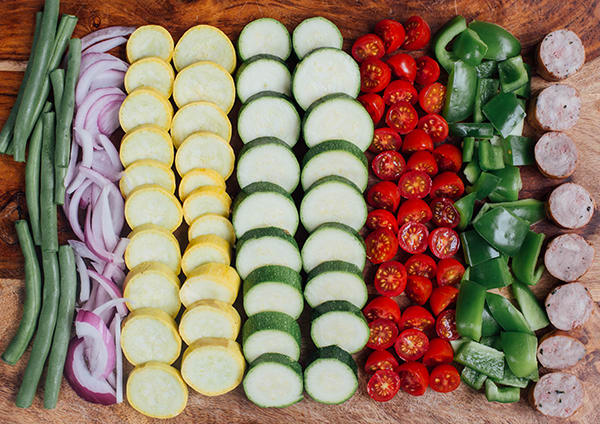
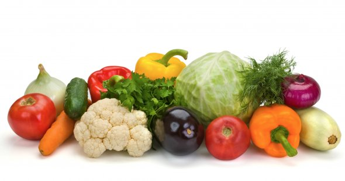
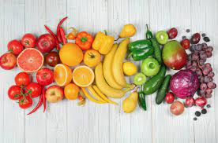

Voi voi voi, Have you had your daily dose of veggies today ??
Wild and Wacky Vegetables
"Quotation, n: The act of repeating erroneously the words of another."
Ambrose Bierce in The Unabridged Devil's Dictionary
Some diseases
Veggie
Disease
Beets
Beeturia
Carrots
Carotenosis



Really informative info
By nature, the exterior of a cactus screams “do not touch me,” (let alone eat me), yet hundreds of varieties of edible cacti have been consumed for centuries. One species in particular, nopal cactus, is growing on the Central Coast thanks
to Rivenrock Gardens, a family-owned small organic farm that has specialized in edible cacti since 1993. This species, which naturalized around the Mediterranean and is deeply rooted in the culture and cuisine of Mexico where it is
native, used to be consumed for its fruit exclusively. Today both the nopal’s fruit and pads are cooked and prepared for dishes, incorporated into cocktails, gourmet meals and even animal feeds. Each cactus offers varying fruits, colors
and textures along with an unforgettable sweetness. This vegetable has also been known to help those facing extreme food depletion due to its resilience growing in harsh environmental conditions, and with our changing climate, edible
cacti are a produce you’ll be seeing more of.